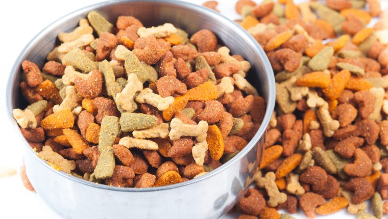
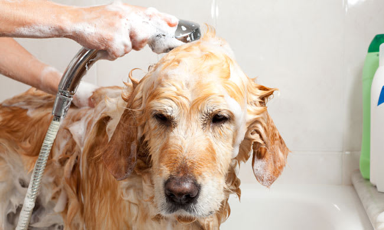

Tener a un perro implica una gran responsabilidad. Aunque los consejos para cuidar a tu mascota son sencillos, se debe
saber que serán para el resto de su vida, por lo tanto, cuidar a tu perro, o a ese perro que pretendes adoptar, no es tarea fácil.
Además de facilitarle las cosas básicas como son la comida, el agua, el veterinario o hacer ejercicio, hay otros consejos
que son importantes para que tu mascota esté feliz y con una salud de hierro.
"Dame una caricia y te seguiré hasta el fin del mundo"
Alimentación saludable

Según la edad del cachorro le daremos de comer con más o menos frecuencia: tres veces al día si es un cachorro, dos o incluso una si es un perro adulto
Siempre tendremos un poco de agua fresca en el cuenco para que el can esté hidratado, especialmente en los meses más calurosos del año.
Debes darle un pienso de calidad, nutritivo, y acorde a la edad del perro para que ingiera todos los nutrientes que necesita.
Los tres nutrientes esenciales para los perros son: Hidratos de Carbono o proporcionan energía, cuidan el intestino, las proteinas son
fundamentales para las células, los tejidos y Vitaminas para que su metabolismo funcione correctamente.
La hígiene
Esta es otra necesidad básica que no debemos nunca descuidar. Cuando hablamos de higiene, tenemos que tener en cuenta:

Baño
Para saber cuándo lavar a tu perro, observa si tiene el pelo sucio, con mal olor, si está muy acalorado o ha hecho ejercicio.Recuerda que bañarles demasiado puede perjudicarles.
Mantener sus dientes sanos
La limpieza de la boca es fundamental para evitar bacterias, sarro, halitosis y otros problemas. Puedes limpiar tú mismo sus dientes a diario con un cepillo o tres veces a la semana con una pasta de dientes específica para perros.
Los paseos
Además de la alimentación, la actividad en tu mascota es fundamental para que esté en forma y se mantenga sana. Por eso, es necesario que haga ejercicio de manera habitual, pero con precaución para evitar lesiones o heridas.
Esto le ayudará a expresarse, explorar, seguir rastros, mantenerse activo y, sobre todo, ¡divertirse!
Dar paseos frecuentes, salir a correr o jugar con tu perro le ayudará a estar sano y os permitirá construir poco a poco un gran vínculo en vuestra relación.